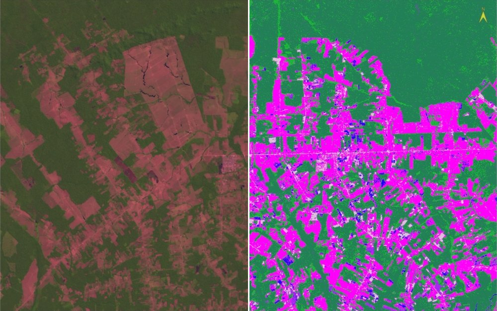
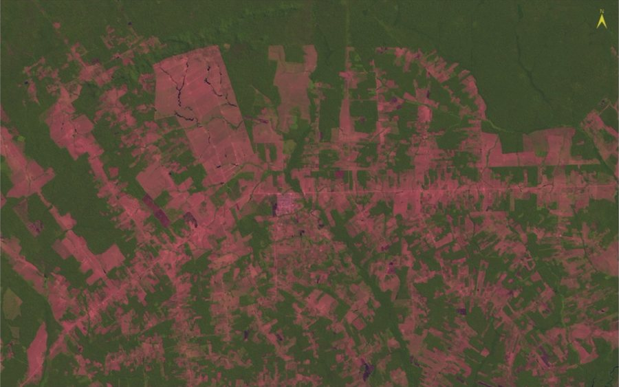
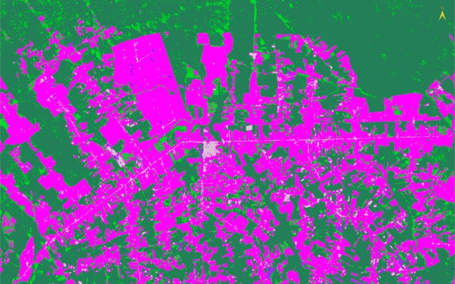
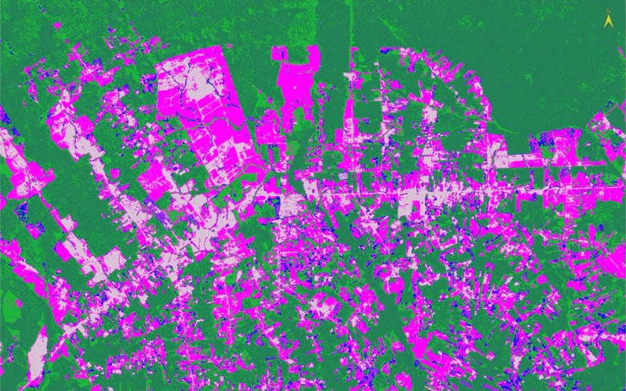
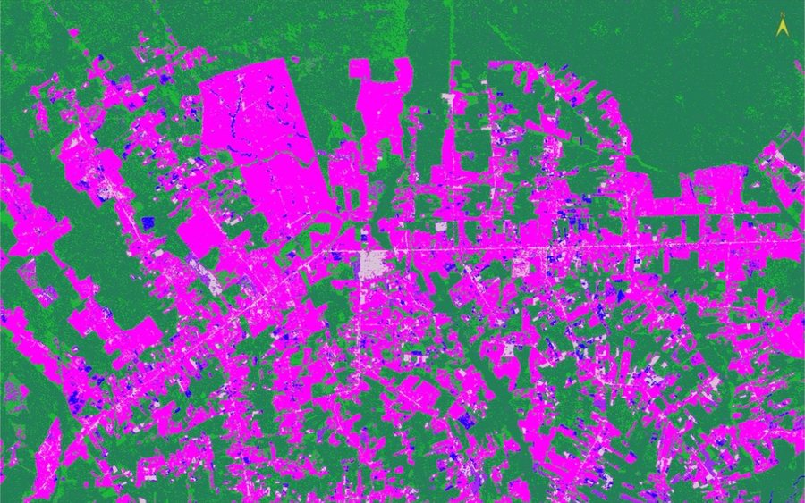
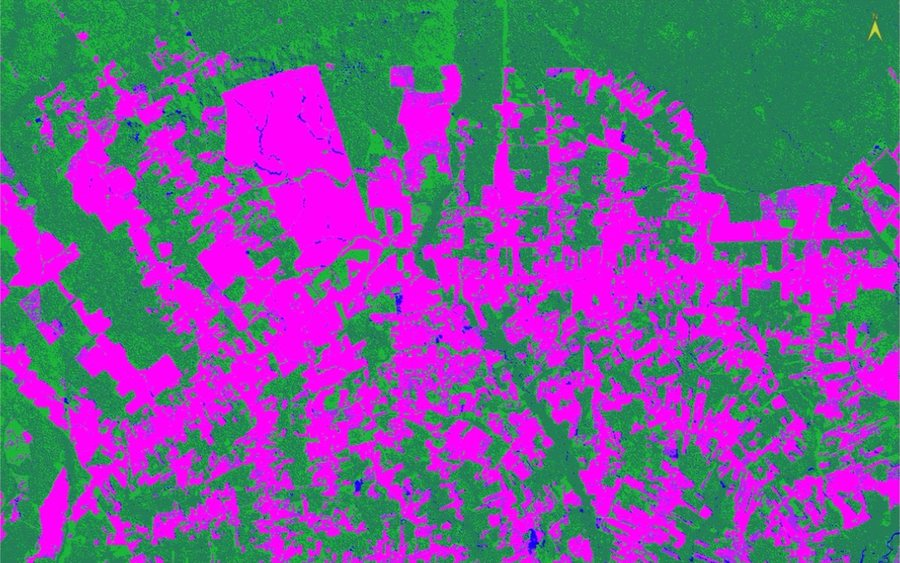

Amazon Deforestation Land-Cover Classification

Overview
A guided lab from Remote Sensing I at the University of Denver, using a Landsat 7 ETM+ scene (24 August 2000) of fishbone-pattern clearing in Rondônia, Brazil. The question was practical: if you need a land-cover map of an active deforestation front, how much does the choice of classifier matter? Six training classes (primary forest, pasture, second-growth forest, urban and bare soil, water, burn scar) were digitized as regions of interest in ENVI, then used to run Minimum Distance and Maximum Likelihood classifications. ISODATA unsupervised clustering was run at 3, 5, and 8 clusters for comparison. Every result was compared with the reference classification from Roberts et al. (2002). The left half of the image above is the 5-4-3 false-color composite; the right half is the Maximum Likelihood result for the same ground.
Results
- Maximum Likelihood tracked the reference map best. Over the comparison extent it mapped about 22% pasture and 3% urban, against 29% and 2% in the reference.
- Minimum Distance labeled about 11% of the area urban and only 12% pasture, because bright and dry pasture pixels sit closer to the urban mean than to the pasture mean.
- Rule-image scores showed primary forest is most easily confused with second-growth (-5.2 vs. -10.1) and least with pasture (-80.0).
- ISODATA needed 8 clusters before water separated, and never produced an urban cluster.
Figures

FIG. 1 Landsat 7 ETM+ 5-4-3 false-color composite. Forest is dark green, pasture is pink, burn scars are dark purple.

FIG. 2 Reference classification (Roberts et al. 2002) used as the benchmark.

FIG. 3 Minimum Distance. Large pastures break into urban (thistle) and scattered water (blue).

FIG. 4 Maximum Likelihood. Pastures hold together and urban is limited to the town and bare fields.

FIG. 5 ISODATA, 8 clusters, relabeled to the same legend. Forest and pasture are captured; urban is not.
Processing
Coordinate Reference Systems
- Horizontal
- UTM Zone 20 South, South American 1969 (30 m pixels)
Methods
- 5-4-3 false-color composite for visual interpretation of the six classes
- Six training ROIs, five small rectangles each, spread across the scene
- Supervised classification: Minimum Distance and Maximum Likelihood, with rule images
- Independent test ROIs and rule-image statistics to measure class confusion
- ISODATA unsupervised clustering at 3, 5, and 8 clusters, each relabeled to the reference legend
- Side-by-side comparison of every result with the reference classification
Deliverables
- Two supervised classification rasters with rule images
- Three ISODATA classification rasters
- Training and test ROI files
- Written analysis of class confusion and method comparison
Key Technical Challenge
Second-growth forest and burn scars occur in small, irregular patches, so it is hard to find pure training and test pixels for them. An independent second-growth test area scored highest for burn scar, not second-growth, which showed the sample was mixed and that these two classes are the weak point of every method tried.
Lessons Learned
Classifier choice matters most for the spectrally variable classes. A classifier that models class variance (Maximum Likelihood) held pasture together where a means-only classifier (Minimum Distance) broke it apart. Unsupervised clusters are spectral groupings, not land uses: the town and bright pasture never separated, even at 8 clusters. Area percentages here were measured over one screen extent and are approximate, and no formal accuracy assessment (confusion matrix) was part of the exercise.